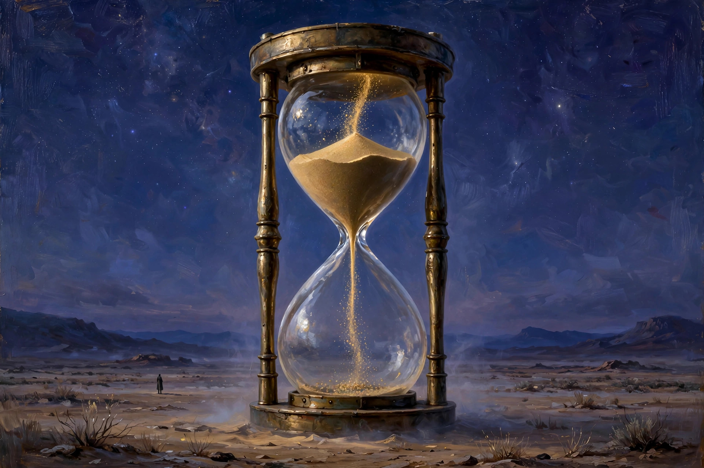

Eterne — eternal. Without beginning or end; everlasting; endless. The short, old form of a word we still use every day.
Say it out loud: ih-TURN. Two syllables, one idea: time that never runs out. Tonight's board was full of re-words — returned, renewed, retweeted, re-entered — and hiding between them was the one word that means forever.
From Middle English, from Middle French, from Latin aeternus — built on aevum, "age." First known use: the 1300s.
One root, one suffix, one quiet retirement — tap each:
Age in Rome, eterne in England, eternal everywhere else. Same root, three lifetimes.
Three facts that have to be held together:
Eterne came first in English — 14th century. "Eternal" is the longer, later cousin that pushed it out of everyday speech. Short words lose to long ones when the long one sounds more learned.
In Hamlet, the Player describes Mars's armour "forg'd for proof eterne" — made to last forever, proof against everything. That is the word doing its job: not just long-lasting, but made for eternity.
Nothing killed it. "Eternal" simply won — longer, more Latinate, more flexible. Eterne survives where short old words survive: poetry, dictionaries, and tonight's Blossom board.
Middle English takes eterne from Old French, from Latin aeternus. A word for forever, brand new to the language — and already ancient, carrying Rome's whole idea of age inside it.
Shakespeare gives it its most famous line: the Player's speech, Mars's armour "forg'd for proof eterne." Armour that cannot fail, because it was made for eternity. The word at full power.
Samuel Johnson defines it: "Eternal; perpetual; endless." Still alive enough to need defining — but the longer "eternal" is already doing most of the work.
Out of everyday speech, but never quite dead. It waits in dictionaries, turns up in crosswords, and surfaces on Blossom boards between the re-words — the one on the list that means forever.
1. Eterne means…
2. The Latin behind it is…
3. Shakespeare put it in…
You mine Blossom for prompt seeds — here's this one, ready to plant:

Tonight's render — spot the quiet impossibility.